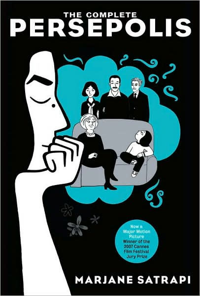
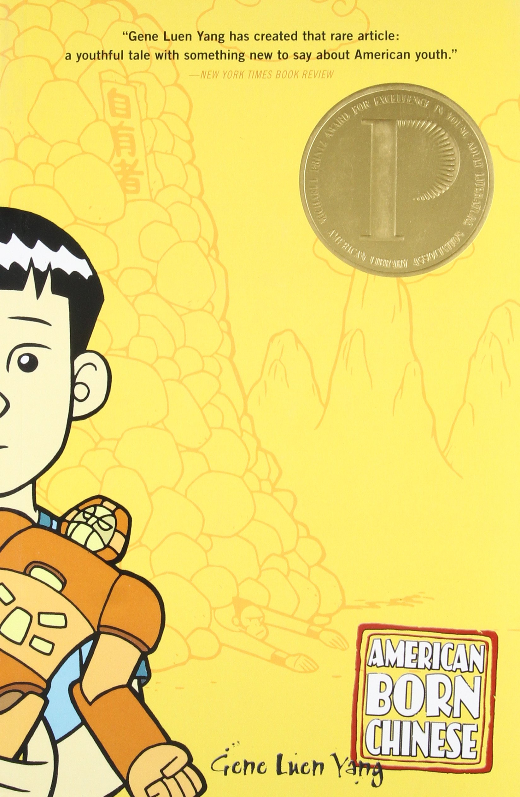

Graphic Novels
According to the Oxford English Dictionary, a graphic novel is “a full-length (esp. science fiction or fantasy) story published as a book in comic-strip format.” A key feature of graphic novels is the use of color and panels in the work. There are graphic novels that are a single box per page with text. There are also completely wordless graphic novels that tell a story solely through pull page illustrations.
Unlike comics and manga, graphic novels have to standard size at all. Neil Gaiman's The Sandman is a huge and heavy book while Marjane Satrapi's Chicken with Plums is small and thin.
Graphic novels cover a broad array of genres. The pairing of images and text make graphic novels more accessible to a wider range of people since the text is more spread out on the page and the corresponding images help with comprehension. This comes in particularly handy when covering difficult to discuss topics such as prejudice, abuse, and loneliness.
Given their versatility a graphic novel could be about absolutely anything!
Different Types of Graphic Novels
There are five predominant types of graphic novel:
- Superhero Stories
- Manga
- Non-Super hero stories
- Personal narratives
- Non-Fiction
This gets into the gray area of what distinguishes a graphic novel from comics and manga. There is a lot of overlap but ultimately it comes down to style, content and design of the work. Graphic novel is used as the most common umbrella term for all three.
What Are The Benefits of Graphic Novels?
The above article makes a good argument for the benefits of teaching and reading graphic novels. Here are a few key takeaways:
- The graphic novel form inspires deeply emotional storytelling
- Graphic novels invite empathy
- The stories allow distance to escape one's own reality
- Readers' are reflected in the stories
- Prompts readers to do critical thinking to fill the gaps in between the panels
- No story is too complex, they are made more accessible through the graphic form
Suggestions
 